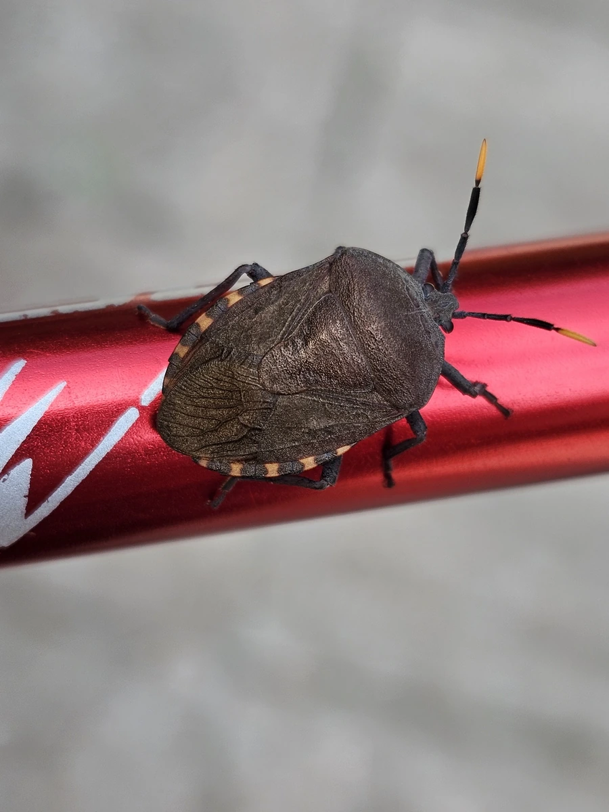

昆虫 · 动物界
九香虫 Coridius chinensis

体扁卵圆、深褐带斑的蝽类，受惊时放出浓烈臭气，成虫可入药并被视为食用昆虫，取食瓜类藤蔓。
- 分类
- 门节肢动物门纲昆虫纲目半翅目科蝽科属九香虫属
- 栖息环境
- 葫芦科瓜类的藤蔓、菜园与村落附近的石缝墙缝
- 地理分布
- 中国黄河以南各地，长江流域及华南常见
- 保护级别
- 常见种，无保护需求；野生资源因捕捉有所减少
物种志
九香虫的成虫体长约一点五至二厘米，体扁而卵圆，深褐色，前胸背板和小盾片上有淡色斑纹，体表布满细密刻点。它的臭腺发达，受惊时从胸部腹面喷出带有强烈气味的液体，气味刺鼻难闻。翅膜质，飞翔能力一般，多爬行于瓜藤之间，常几只聚在一起。
它分布于中国黄河以南各地，栖息在冬瓜、南瓜、丝瓜等葫芦科植物的藤蔓上。成虫和若虫刺吸茎叶汁液，数量多时会使瓜藤萎蔫。它以成虫在石缝、墙缝和落叶下越冬，翌年春季出来活动，一年发生一代。九香虫在中药里也以九香虫之名入药，民间还有炒食的习惯，因处理后带特殊香气而得名，但活体气味极臭，处理不当难以下口。
形态与习性
- 体长约一点五至二厘米，体扁卵圆
- 体色深褐，前胸与小盾片有淡色斑
- 臭腺受惊时喷出气味浓烈的液体
- 寄主冬瓜、南瓜、丝瓜等葫芦科藤蔓
- 越冬以成虫在石缝、落叶下越冬
- 用途中药入药，民间亦有炒食习惯
趣味知识
- 活着的九香虫臭得让人退避，炒熟之后却有一股特殊的香气，名字正由此而来。
- 它把瓜藤当食堂，一群聚集在一根藤上，藤蔓很快发黄萎蔫。
- 它在石缝墙缝里抱团过冬，翻石缝常能一次找到好几只。